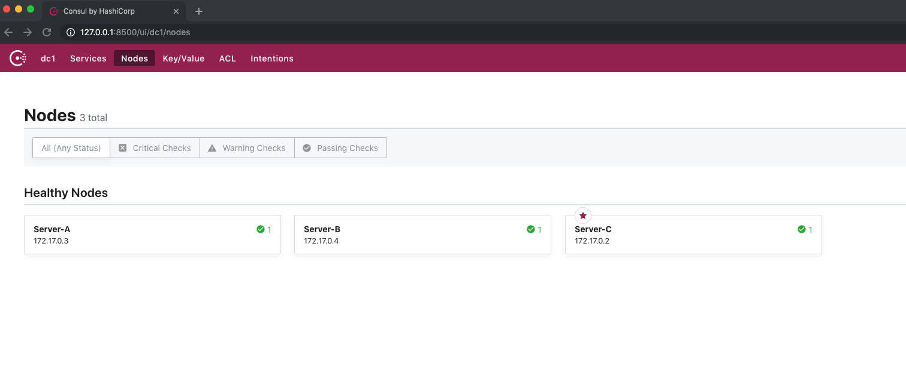

原文连接:https://www.cnblogs.com/bluersw/p/11610711.html
Consul集群Server+Client模式
架构示意图
只使用Consul的Server模式有以下2个问题：
- 因为Consul Server数量受到控制所以压力承载（扩展性）是个问题。
- Server很少导致一个Server下会注册很多微服务，当Server挂掉，这个Server节点下注册的微服务都会视为无效。
基于上述问题我们在架构中加入Consul Client模式，Client因为加入了LAN gossip协议组成网络中（高速局域网），可以识别故障的Server节点并找到可用的Server节点继续工作，其实Server模式负责的是用WAN gossip协议组成的网络进行跨广域网的数据同步（多个数据中心），这点Client模式是做不到的，Client模式也提供服务的注册和查询，但Client模式不存储节点数据，Client将请求转发给Server进行处理，节点注册数据在Server端是持久化保存的，Client的数量可以无限多，Server的数量是受控制的。总之：Client模式+LAN gossip协议组成了一个数据中心中的各个节点，Server负责投票选出Leader进行数据中心内的数据同步，这个Leader还负责利用WAN gossip协议跨广域网的与其他数据中心进行数据同步。
PS：在Client注册的服务心跳监控检查由Client负责。
搭建环境
获得Docker镜像（bluersw/spring-cloud-consul-consumer 是服务消费者镜像里面运行的程序项目叫spring-cloud-consul-client，因为名字的起的不讲究导致了混乱，spring-cloud-consul-client不是Consul Client。）：
docker pull consul
docker pull bluersw/spring-cloud-consul-consumer:cc
docker pull bluersw/spring-cloud-provider:cc
docker pull bluersw/spring-cloud-provider:cc
docker pull bluersw/spring-cloud-provider-second:cc启动Consul Server(Windows版本的Docker运行命令时参数的IP地址要用"ip地址",比如：-client="0.0.0.0")：
docker run -i -t -p 8500:8500 --name=ConsulServer-C consul agent -server -ui -node=Server-C -bootstrap-expect=3 -client=0.0.0.0
docker run -i -t -p 8501:8500 --name=ConsulServer-A consul agent -server -ui -node=Server-A -bootstrap-expect=3 -client=0.0.0.0 -join=172.17.0.2
docker run -i -t -p 8502:8500 --name=ConsulServer-B consul agent -server -ui -node=Server-B -bootstrap-expect=3 -client=0.0.0.0 -join=172.17.0.2
启动spring-cloud-provider：
docker run --name=spring-cloud-provider -d -p 9001:9001 bluersw/spring-cloud-provider:cc /opt/consul/./consul agent -data-dir=/opt/consul/data -config-dir=/opt/consul/config -node=privider-cc -join 172.17.0.3在启动此Docker的同时运行Consul Client模式，并加入Consul Server A（加入那个Consul Server都可以）,TAG为CC的镜像文件里已经包含了Consul程序。
spring-cloud-provider的配置文件内容：
spring.application.name=spring-cloud-provider-01
server.port=9001
spring.cloud.consul.host=127.0.0.1
spring.cloud.consul.port=8500
#注册到consul的服务名称
spring.cloud.consul.discovery.serviceName=service-provider
#以下两项如果不配置健康检查一定失败
spring.cloud.consul.discovery.prefer-ip-address=true
spring.cloud.consul.discovery.health-check-path=/actuator/health配置中的注册服务地址已经改成了127.0.0.1，其他服务项目的配置文件都改成了在本机的Consul Client中注册。
启动服务：
docker exec spring-cloud-provider /usr/local/java/bin/java -jar /opt/spring-cloud-provider-0.0.1-SNAPSHOT.jarservice-provider服务在privider-cc节点被注册成功。

用同样的方法启动spring-cloud-provider-second和spring-cloud-consul-consumer。
docker run --name=spring-cloud-provider-second -d -p 9002:9002 bluersw/spring-cloud-provider-second:cc /opt/consul/./consul agent -data-dir=/opt/consul/data -config-dir=/opt/consul/config -node=provider-second-cc -join 172.17.0.4
docker exec spring-cloud-provider-second /usr/local/java/bin/java -jar /opt/spring-cloud-provider-second-0.0.1-SNAPSHOT.jar
docker run --name=spring-cloud-consul-consumer -d -p 9003:9003 bluersw/spring-cloud-consul-consumer:cc /opt/consul/./consul agent -data-dir=/opt/consul/data -config-dir=/opt/consul/config -node=consumer-cc -join 172.17.0.2
docker exec spring-cloud-consul-consumer /usr/local/java/bin/java -jar /opt/spring-cloud-consul-client-0.0.1-SNAPSHOT.jar
模拟服务器故障
关闭Consul Server B：
因为service-provider在本机的Consul Client中注册，并Client可以利用LAN gossip协议找到可用的Server，所以关闭Consul Server B丝毫造成不了影响,如果Client或者服务本身挂掉了，那么Server端会将此节点或服务标记故障并不再使用，请求者就请求不到这个故障的节点了,同样的修复故障节点后所有服务和功能恢复如初。
源码
Github仓库:https://github.com/sunweisheng/spring-cloud-example